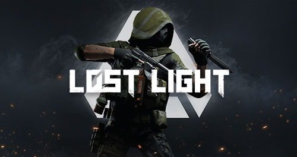

TOP 5 JOGOS MOBILE
1.GANGSTAR VEGAS
Seguindo os passos de West Coast Hustle , Miami Vindication e Rio , a última entrada Gangstar da Gameloft, Gangstar Vegas (Grátis) traz o maior ambiente da série ao recriar virtualmente a cidade do pecado favorita de todos, Las Vegas. Vou tirar isso do caminho rapidamente para não perder seu tempo mais tarde – Gangstar Vegas é, em muitos aspectos, idêntico ao Grand Theft Auto , desde a forma como as missões são dadas até o diálogo enquanto dirige para o tipos de missões disponíveis. O jogo também não muda drasticamente a forma como os outros três jogos Gangstar são jogados, mas refina algumas mecânicas dos anteriores. Como Jason Malone, um boxeador que é pago para dar um mergulho pelo mafioso Frank Valieno, você concorda em jogar a luta, mas durante uma rodada, você consegue acertar e nocautear o outro cara. Você vence a luta e, embora não quisesse, agora está na lista de alvos de Frank. Durante este prólogo interativo, você é apresentado aos controles de combate corpo a corpo. O tutorial de Vegas apresenta os principais aspectos do jogo enquanto documenta sua fuga de Frank. Tudo é bastante simples. Você pode dirigir seu veículo inclinando, mas descobri que estava inclinando meu iPad como um homem selvagem e ainda não conseguia contornar as curvas com tanta facilidade. Eu mexi na sensibilidade, mas acabei trocando para a opção de direção do botão virtual. Você pode alterar o tipo de controle para cada veículo diferente, se desejar.
egas é totalmente dublado e vai da boa atuação à qualidade de Resident Evil (1996). O próprio Jason é muito imprevisível. Às vezes ele gosta, às vezes parece que está entediado e quer tirar o fone de ouvido. Karen, uma das primeiras personagens que você conhece, é crível, assim como Vera, que é a chefe de Karen. O elenco restante é amador, mas faz o trabalho; com exceção de E-Man. Ele é um personagem irritante e, se eu fosse Jason, o torturaria constantemente apenas para fazê-lo calar a boca. Controlar Jason é bastante doloroso e exigirá algum tempo para se acostumar. Correr é um aborrecimento e é excessivamente sensível (mesmo com a sensibilidade reduzida). Ele tende a bater nas paredes com frequência e, quando você se move na direção oposta, ele tende a bater na parede antes de finalmente se levantar. Quando você adiciona corrida à mistura, é ainda pior. Para escalar obstáculos, você precisa correr enquanto corre em direção ao que quer que seja, no entanto, acho que Jason gosta de pular sobre tudo e qualquer coisa, mesmo quando não estou tão perto do objeto.
link para baixar Gangstar vegas grátis2. PUBG MOBILE
Se você dissesse há um mês que o PUBG Mobile funcionaria melhor do que o PUBG no Xbox e que seria gratuito, você teria recebido muitos olhares estranhos. No entanto, aqui estamos, e o futuro dos jogos móveis nunca pareceu tão brilhante. É absolutamente notável que ele funcione tão bem e consiga encaixar todos os recursos do PUBG em pequenas telas sensíveis ao toque. Não se engane: esta é a verdadeira experiência do PUBG. Cem pessoas debruçadas sobre seus telefones e tablets Android ou iOS voam sobre uma ilha deserta e saltam de um avião para saquear prédios abandonados, reunir recursos e lutar até restar apenas uma pessoa de pé. A primeira vez que você cai em um mapa e vê toda a ilha de Erangel espalhada diante de você em tempo real, em seu telefone, é uma experiência surreal.
Mas é claro, este é um jogo de tiro multiplayer, e esse tipo de jogo não tem um grande histórico com controles de tela sensível ao toque. No geral, parece um pouco melhor do que outros atiradores móveis, mas ainda não é tão bom. Você pode se mover facilmente usando o joystick, girando a câmera arrastando o polegar direito pela tela e há botões na tela para coisas como abrir a mochila, agachar-se, deitar-se e até pular. Quando uma arma está equipada, botões aparecem para mirar na mira ou através da mira, e você pode atirar com qualquer um dos polegares. Mas fazê-los todos ao mesmo tempo é bastante complicado. Depois de avistar alguém, você normalmente tem um ou dois segundos para alinhar sua tacada, o que é difícil, e se você errar, precisará deslizar o polegar para girar e alinhar a tacada novamente, dificultando o alinhamento rápido das tacadas. . Depois de jogar algumas partidas, comecei a me acostumar com os controles, mesmo que não sejam tão precisos. Mas o PUBG Mobile não deveria ser melhor do que as outras versões, apenas parece uma boa maneira de jogar o mesmo jogo em qualquer lugar e a qualquer momento. Por exemplo, você dispara tocando nos botões na tela, mas esses botões estão em um local onde você costuma arrastar o polegar. Quando isso acontecer, você acidentalmente disparará tiros, o que não apenas desperdiça balas preciosas, mas também alerta os inimigos sobre sua posição. É um pouco complicado saquear itens não essenciais e trocar itens de cura também. Descobri que jogava PUBG Mobile de maneira muito diferente de como jogo no PC e no console. Nos sistemas limitados, é bom levar o seu tempo movendo-se lentamente pelo mapa, escondendo-se atrás das árvores e rastejando pelas casas para evitar a detecção. Mas no celular, eu invadi áreas com armas em punho com um grau muito maior de confiança em minhas habilidades. Parece que a grande maioria dos jogadores luta para mirar agora, embora não esteja claro se isso é uma falta geral de habilidade ou porque alguns deles são na verdade bots fáceis de matar nos níveis mais baixos de
link para baixar pubg mobile grátis3. CALL OF DUTY MOBILE
A franquia Call of Duty não é estranha aos jogos para celular, mas o título sucinto de Call of Duty: Mobile é diferente. Embora eu já tenha lutado contra zumbis de Call of Duty em um telefone e até usado uma caneta Nintendo DS para mirar (não recomendo) em jogos pouco ambiciosos projetados para as limitações de suas plataformas, esta nova entrada representa um esforço concentrado da Activision para deixar uma marca no mercado móvel notoriamente difícil de quebrar e superlotado - e claramente quer atrair pessoas a longo prazo. Você não encontrará uma campanha, mas os modos multijogador são substanciais e incluem até um battle royale completo. O que é apresentado é impressionante, mas os controles são duvidosos e sua natureza free-to-play faz com que você se lembre de suas microtransações com frequência, mesmo que felizmente sejam fáceis de ignorar. Usar uma tela sensível ao toque para controlar um atirador nunca será comparável a um controlador, muito menos a um teclado e mouse, e você simplesmente não pode evitar isso. Além da inerente relativa falta de velocidade e precisão, você também está cobrindo parte da tela com os dedos. Com esses entendimentos em vigor, no entanto, posso dizer que me diverti bastante movendo e atirando em Call of Duty: Mobile. O movimento pode ser um tanto inconsistente com o manípulo de controle esquerdo virtual, mas mirar e atirar geralmente parece bom. Aproximar-se furtivamente de alguém e alinhar o retículo funciona, e no cenário inverso consegui levantar minha arma e atirar de volta rapidamente e de maneira confiável. Movimentos mais detalhados, como saltar por uma janela, agachar-se atrás de uma cobertura e lançar uma granada são mais complicados, graças à densidade dos ícones na tela, mas o tiro padrão é satisfatório. Excedeu minhas expectativas reconhecidamente baixas, mas isso não quer dizer muito.

Olhando além do mar de ícones, porém, Call of Duty: Mobile parece ótimo – novamente, relativamente falando. Os ambientes, armas e soldados estão cheios de detalhes surpreendentes com modelos de personagens que não parecem reduzidos para dispositivos móveis e muitos pedaços de detritos por todo o ambiente. Naturalmente, ele não se sustenta lado a lado com Call of Duty: Black Ops 4 rodando em um Xbox One X, mas é impressionantemente próximo no meu iPhone XR. 1 vs. 100 O modo battle royale é definitivamente o elemento mais impressionante do pacote de Call of Duty: Mobile. Ele funciona como uma versão condensada do modo Blackout de Call of Duty: Black Ops 4 com várias opções de classe, veículos e outros sinos e assobios. Você pode jogar em terceira ou primeira pessoa (os dois estilos têm matchmaking separado para garantir que os jogadores em terceira pessoa não tenham uma vantagem injusta), e raramente, ou nunca, encontrei lentidão ou bugs de quebra de jogo. Entrei sozinho em primeira pessoa e tive momentos familiares e intensos de agachamento em uma casa com minha arma apontada para a porta enquanto a zona segura se fechava ao meu redor. Mas também tive momentos divertidos e absurdos de entrar em um helicóptero com um grupo de três estranhos e bater com ele na encosta de uma montanha. Este battle royale pode ter um mapa menor com partidas mais curtas em comparação com seus pares,Os outros modos multiplayer mais tradicionais de Call of Duty são divertidos, mas familiares. Team Deathmatch é direto, Domination é sobre capturar zonas específicas, Search and Destroy é o mais tático, pois permite que você defina e desarme bombas - tudo para você praticar contra oponentes de IA. Eu me diverti mais com o Frontline, que é uma variação do Team Deathmatch em que você surge da base do seu time após cada morte. Ele joga como Call of Duty confortável e familiar e tê-lo disponível no meu telefone para mergulhar em uma partida de vez em quando tem sido o suficiente para me convencer de que devo manter o jogo instalado.
link para baixar call of duty mobile gratis4. APEX LEGENDS MOBILE
A princípio, o Apex Legends Mobile parece uma ideia mal proposta. Afinal, Apex no Nintendo Switch não funcionou tão bem quanto esperávamos, e é uma luta experimentar adequadamente as melhores partes do battle royale de Respawn nessa plataforma devido à falta de potência. No entanto, o Apex Legends Mobile não é uma porta direta do Apex Legends; em vez disso, é sua própria experiência autônoma extremamente polida e bem otimizada para iOS e Android. Fiquei agradavelmente surpreso ao me ver aproveitando meu tempo jogando em minhas telas minúsculas - e isso vindo de alguém que geralmente não é um jogador que prioriza dispositivos móveis. Na verdade, de certa forma, acabei gostando mais do Apex Mobile do que da versão para PC e console, dado o estado atual em que estão. O Apex Mobile não é multiplataforma compatível com seu irmão, mas também não é uma grande diferença: ele usa a mesma fórmula básica de jogar em equipes de três e, dos 10 Legends disponíveis no lançamento, nove são os originais do Apex Legends ' lançamento: Bangalore, Bloodhound, Caustic, Gibraltar, Lifeline, Mirage, Octane, Pathfinder, Wraith. Ter o grupo original disponível parece bom, especialmente porque essas lendas ainda são altamente viáveis no jogo original – e são ainda mais aqui sem as lendas adicionais que foram descartadas na versão para PC/console após o lançamento.
O décimo é o primeiro: um exclusivo de plataforma chamado Fade, que lembra bastante o Tracer de Ovewatch, pois vem com uma habilidade de recall que o leva de volta para onde ele estava alguns segundos atrás. Ele é uma grande lenda do jogador solo porque seu kit é construído para realmente beneficiar sua própria capacidade de sobrevivência e manobrabilidade. Enquanto seu ultimate joga os inimigos próximos em um vazio onde eles não podem sofrer ou receber dano, se você estiver com problemas, você também pode entrar no raio do ult para entrar no vazio e se tornar invulnerável. Portanto, todo o kit de Fade pode realmente servir para mantê-lo sobrevivendo o máximo possível por conta própria.Lançar Fade como uma lenda apenas para dispositivos móveis é uma decisão interessante, pois pude ver suas habilidades de movimento sendo usadas de maneiras criativas no console e no PC. Não houve nenhum Legends específico de plataforma antes e, embora eu entenda querer atrair jogadores estabelecidos do Apex para experimentar o Mobile, parece um pouco estranho e injusto para a comunidade que tornou este jogo tão bem-sucedido quanto é. De qualquer forma, a coleção das 10 lendas no celular é mais do que suficiente para escolher, especialmente porque nesta versão do Apex as habilidades não parecem importar tanto quanto o tiroteio básico e a superação de seus inimigos. E quanto menos confusão você tiver com diferentes habilidades de Legend em telas menores de celular, melhor, então esta lista parece apropriada para o que o Apex Mobile é agora. Mas isso também faz com que Fade, sendo uma lenda apenas para dispositivos móveis, pareça um desperdício.
link para baixar Apex Legends grátis5. LOST LIGHT
Luzes no escuro Este jogo de tiro em terceira pessoa vê os jogadores se posicionando em uma zona de exclusão, uma “terra de ninguém” governada pelo olho mais aguçado. Existem três mapas disponíveis, nenhum dos quais é especialmente único ou emocionante. No entanto, todos eles oferecem um espaço decentemente divertido para uma jogabilidade acelerada ou metódica. Há espaço para tiros de médio alcance ou corredores apertados para combates de curta distância. Os jogadores podem entrar em combate ou furtividade para coletar itens valiosos, que serão entregues em uma das várias zonas de extração. Extrair significa escapar com todo o saque que você coletou – morrer significa perder tudo . Você é um Firefly, encarregado de explorar a zona de exclusão. Seu trabalho é trazer luz a quaisquer eventos misteriosos que tenham criado esta zona de guerra. Esta jogabilidade de alto risco e alta recompensa é uma reminiscência de The Dark Zone de 2016A Divisão n. Havia muitos itens valiosos que os jogadores precisavam extrair com segurança da zona PvPvE. Outros jogadores tentariam matá-los e roubar o saque para si mesmos. A mecânica de saúde e criação de Escape From Tarkov também é bastante semelhante à do próprio Lost Light .
Entre na zona Este é o loop principal do jogo. Entre na zona, mate outros jogadores (ou saqueie furtivamente), extraia, venda seu saque. Há uma loja no jogo para vender saques e um mercado negro para negociar entre os jogadores. Existem missões a serem concluídas com cada implantação que oferecem recompensas além do seu saque. Estes têm objetivos simples, como conseguir 3 mortes com um AKS-74. A maior parte da história é alimentada por gotejamento por meio dessas missões, mas a falta de uma história forte é desculpada pelo ciclo de jogo viciante. O uso de armas é suave e divertido – as armas parecem únicas e pesadas. Se você não está jogando contra jogadores online, existem bots. Esses bots podem se manter sozinhos e proporcionar uma experiência divertida e tática. Enquanto a jogabilidade é boa mecanicamente, o som é… não. Há um problema de áudio ocasional, mas não é tão gritante ou comum a ponto de arruinar a experiência. Entre os jogos, você tem acesso ao The Shelter. Aqui, você pode gerenciar seu inventário, acessar as lojas, reivindicar recompensas, equipar seu Firefly e interagir com o que é indiscutivelmente a mecânica mais detalhada e atraente do jogo - personalização de armas.
link para baixar Lost ligth grátis